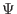
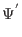
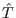

Given the above constraints, it is not clear how to proceed in order to have our quantum register undergo a transformation from an initial state to some final state which performs a useful calculation. Further, if we wish to make use of quantum parallelism, it is not clear if the amplitude of the desired state will be large enough for there to be a good chance of finding the register in this state.
Since an operation on our n bit quantum register is simply a process which transforms our state vector in our N = 2n dimensional Hilbert space from state  = (a1, a2,...aN)T to another state  = (a1', a2',...aN')T, we can represent any possible operator  as a matrix:
The matrix element Tij is the projection of the j'th component of the input onto the i'th component of the output due to the operator. [Griffiths95]
While mathematically any transformation can be achieved by assigning the appropriate values to the matrix elements, only a very small class of operators represent physically realizable operators on a quantum system. For a matrix to represent an operator which acts on a quantum mechanical system, its effect on the state vector must agree with conditions imposed by the Schrödinger equation, namely the operation must be reversible, and it must preserve normalization of the state vector.
Physically realizable quantum transformations are reversible, thus we are immediately restricted to consideration of operators whose matrix representations are invertable, if the matrix representing the operation is singular (the determinant of 's matrix representation is 0), it has no inverse, and thus can not be reversed. So, invertability is a necessary, but not sufficient condition for a matrix representation of a legal operator.
If we further require that the sum of the kinetic and potential energy (called the Hamiltonian) of our system is not changing with time, then the matrix representing any legal transformation will be ``unitary''. A matrix T is unitary if the transpose of the complex conjugate of T is T-1. [Griffiths95] So, we restrict our candidates for operators to ones whose matrices are unitary, which will be a necessary and sufficient condition for being a physically realizable transformation on a quantum mechanical system with a time independent Hamiltonian. Systems with time dependent Hamiltonians' are also feasible, but are not required to perform either Grover's or Shor's algorithm, and are not considered here.
Now the specification of a quantum algorithm is simply a specification for an initial normalized state vector of the quantum register, and a series of unitary matrices representing legal transformations on that state vector. Eventually we will measure our register, and if our operators are chosen well we will measure the register to be in a desired state with high probability.